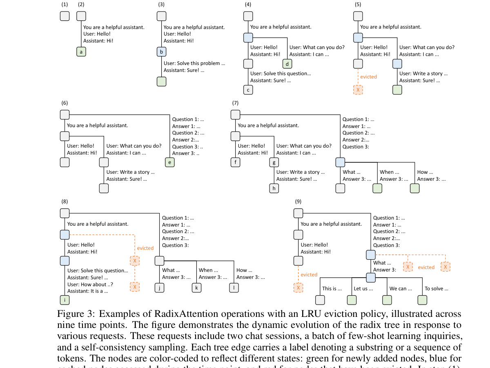

SGLang 是另一款高性能 LLM 推理 runtime，其核心创新 RadixAttention（基于 Radix Tree 的 prefix caching）提供了比 vLLM 更细粒度的 KV cache 共享机制。SGLang 对多模态（VLM）推理的支持正在快速演进中。
SGLang 的 Radix Tree 为纯文本推理提供了非常自然的 prefix 共享：所有到达系统的 prompt 自动插入 Radix Tree，后续请求自动匹配共享 prefix。但在多模态场景中，Radix Tree 遇到了与 vLLM hash-based caching 相同的问题：visual token 的 KV 值因图像而异。
SGLang 社区目前对多模态 prefix caching 的讨论集中在以下方向：

尽管 Radix Tree 在多模态场景下尚未完美适配，SGLang 在实际 VLM serving 中仍有以下优势：
| 特性 | SGLang 的做法 | 对 12GB 的价值 |
|---|---|---|
| Radix Tree 文本 prefix | 视觉 token 之前的纯文本部分依然可共享 | 节省系统提示的重复 prefill，约 20~50MB/请求 |
| Continuous Batching | 支持 prefill 和 decode 混合 batch | 提升 12GB 下的吞吐效率 |
| Token 级 Block 管理 | 与 vLLM 类似的 block 级分配 | 相同的碎片率优势 |
| Structured Output | JSON / Regex 约束解码 | 对文档解析 VLM 任务特别有用（如 OCR 结构化提取） |
| RadixAttention Skip | 对于已完全匹配的 prefix，跳过 attention 计算 | 显存和延迟双优化 |
| 维度 | vLLM | SGLang |
|---|---|---|
| KV Cache 机制 | PagedAttention + hash-based APC | RadixAttention + Radix Tree |
| 多模态支持 | 已较为成熟（v0.5+） | 快速演进中，部分 VLM 已支持 |
| Prefix 共享粒度 | Block 级（16 token 对齐） | Token 级（精确到每个 token） |
| 12GB 友好度 | 非常友好（block size 可定制） | 友好（相同的 block 管理） |
| 社区成熟度 | 更成熟，VLM 文档更完善 | 快速增长，部分 VLM 仍为实验性 |
| 适用场景 | 通用 VLM serving | 多轮对话 + 渐进式 prefix（如 agent 场景） |
SGLang 的以下几个设计思想对 minivLLM 的多模态扩展具有参考价值：
在 Task 10 的 reference 矩阵实验中，我们仅测试了 HF transformers 的 model.generate() 路径，未安装和运行 SGLang runtime。原因有二：一是 4 个 VLM 模型在基础 HF 加载阶段就已全部失败（缺 accelerate），二是 SGLang 本身需要 CUDA 环境（torch.cuda.is_available()），macOS MPS 下无法运行。
SGLang 的 RadixAttention 在当前 minivLLM 实现中作为设计参考存在，而非运行依赖。minivLLM 的 PagedKV（Task 6）采用 vLLM 风格的 correctness-first 实现，但 SGLang 的 Radix Tree 概念在 learning 笔记中有完整记录（learning/notes/10_sglang源码参考.md + learning/papers/12_sglang_radixattention.md）。